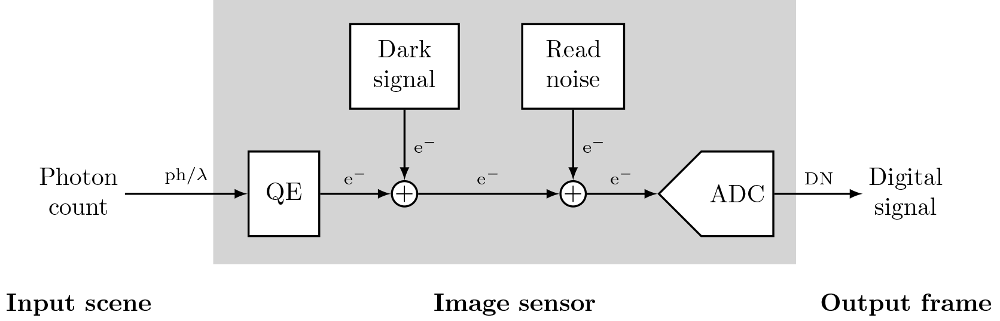
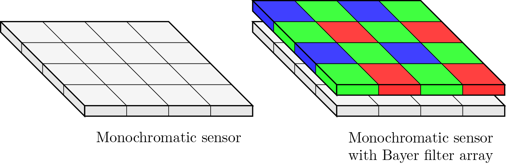
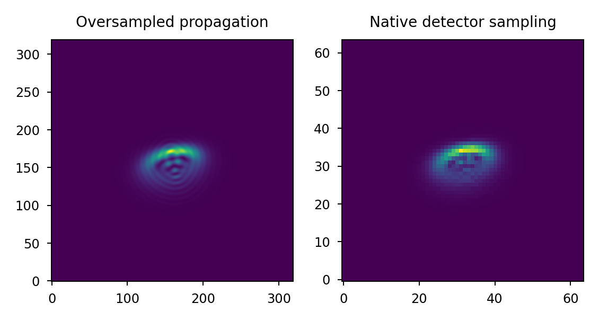
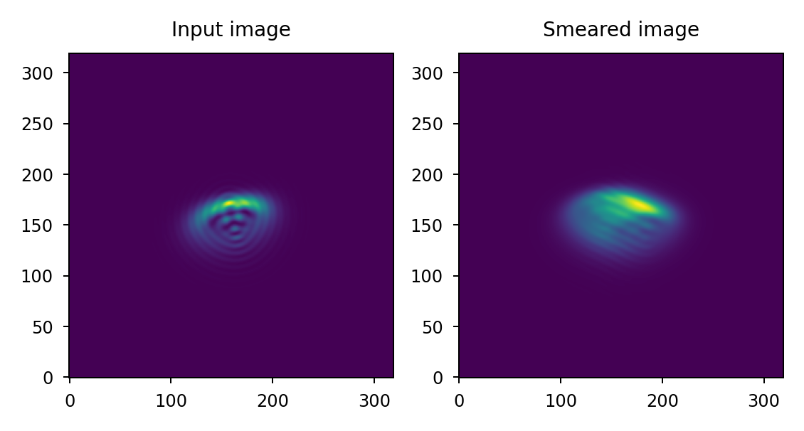
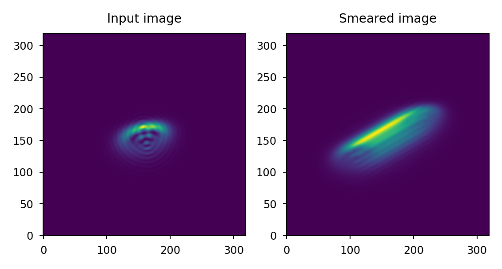
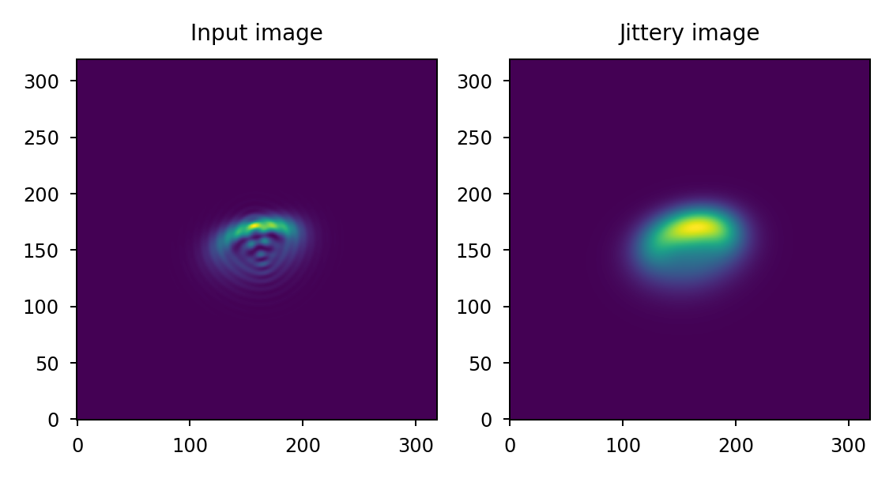

Image sensors#
Lentil does not provide an integrated detector modeling capability, but instead provides a collection of functions in the detector module to help model image sensors and represent some of the more commonly encountered noise sources.
Signal flow#
An image sensor converts photons striking a pixel into a digital signal. The signal produced by each pixel is subject to a number of physical characteristics and is degraded by a variety of noise sources. The core components of this process are represented in the figure below:

Photons striking a pixel during an integration time will result in the accumulation of electrons in the pixel well. The fraction of photons striking a pixel that are collected as electrons is the sensor’s quantum efficiency (QE). Additional electrons “leaking” into each pixel are represented as dark signal. The electrons collected in each pixel during an integration time are converted to a voltage (up to some saturation point), amplified, and converted to a digital signal by an ADC. Additional noise generated during the readout and conversion of the analog signal is represented as read noise.
This is a somewhat simplistic model of a digital image sensor but it provides the framework for capturing the majority of physical effects and noise sources present and is easily extended to capture more complex and nuanced effects.
Charge collection#
Imaging sensors convert light intensity to an electrical signal. The ratio of electrons collected to the number of photons striking a sensor’s photoreactive surface is called the quantum efficiency (typically abbreviated QE).

Pixel effects#
A focal plane array samples a continuous light field to produce a digital image. Because
Lentil models diffraction numerically by propagating a finite set of points through an
optical system, the discretely sampled image plane intensity must be convolved with the
pixel’s aperture function to accurately represent the intensity signal sensed by each
pixel. Lentil’s detector.pixel() method implements this convolution.
After convolving the image plane intensity with the pixel MTF, the data should be
resampled to native detector sampling using rescale(). The
detector.pixelate() method combines the convolution and resampling operations
into a single method.
>>> import matplotlib.pyplot as plt
>>> import lentil
>>> psf = ... # PSF calculation details omitted
>>> psf_pixelate = lentil.detector.pixelate(psf, oversample=2)
>>> plt.subplot(121), plt.imshow(psf, origin='lower')
>>> plt.subplot(122), plt.imshow(psf_pixelate, origin='lower')

Noise sources#
Analog to digital conversion#
Cosmic rays#
Cosmic rays are high energy particles that travel through space. When they strike an image sensor they create a signal that appears as a saturated pixel or streak of saturated pixels.
Imaging artifacts#
Note
To ensure accuracy and avoid introducing ailiasing artifacts, the input data should be at least Nyquist sampled when applying imaging artifacts via convolution.
Smear#
Smear is used to represent image motion with a relatively low temporal frequency relative
to integration time. The motion occurs in a slowly varying or fixed direction over one
integration time. Lentil’s smear() method represents smear as a linear
directional blur over some distance (or number of pixels):
>>> import lentil
>>> import matplotlib.pyplot as plt
>>> psf = ... # PSF calculation details omitted
>>> psf_smear = lentil.smear(psf, distance=5e-5,
... pixelscale=5e-6,
... oversample=5)
>>> plt.subplot(121), plt.imshow(psf, origin='lower')
>>> plt.subplot(122), plt.imshow(psf_smear, origin='lower')

As an alternative to specifying physical distance and pixelscale, a number of pixels can also be provided:
>>> import lentil
>>> import matplotlib.pyplot as plt
>>> psf = ... # PSF calculation details omitted
>>> psf_smear = lentil.smear(psf, distance=10,
... oversample=5)
>>> plt.subplot(121), plt.imshow(psf, origin='lower')
>>> plt.subplot(122), plt.imshow(psf_smear, origin='lower')
The default behavior is to choose a new random smear direction each time smear()
is called, but a static direction can optionally be specified as needed:
>>> import lentil
>>> import matplotlib.pyplot as plt
>>> psf = ... # PSF calculation details omitted
>>> psf_smear = lentil.smear(psf, distance=25,
... angle=30)
>>> plt.subplot(121), plt.imshow(psf, origin='lower')
>>> plt.subplot(122), plt.imshow(psf_smear, origin='lower')

Jitter#
Jitter is used to represent image motion with a relatively high temporal frequency relative
to integration time. Lentil’s jitter() method represents jitter with a
Gaussian blur operation. Note this approach is only valid if the motion occurs randomly in all
directions during one integration time.
>>> import lentil
>>> import matplotlib.pyplot as plt
>>> psf = ... # PSF calculation details omitted
>>> psf_jitter = lentil.jitter(psf, scale=2, oversample=5)
>>> plt.subplot(121), plt.imshow(psf)
>>> plt.subplot(122), plt.imshow(psf_jitter)

If the jitter direction is not sufficiently random during a typical integration time, a timeseries should be used instead. Note this will have a major impact on propagation performance but will provide the most accurate results.